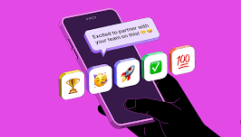

Emojis are no longer just for fun texts and social media. In today’s modern workplace, they’ve found their way into emails, Slack messages, and even corporate announcements. But using emojis in a professional setting comes with some unspoken rules. In this article, we'll explore how to use emojis effectively in professional communication while maintaining clarity and professionalism.
Understanding the Role of Emojis
Emojis can enhance communication by adding emotion, tone, and nuance to plain text. A simple 😊 can make your message more friendly, while a 👏 can show appreciation. However, in professional communication, the goal is to use them sparingly and meaningfully.
When to Use Emojis
Emojis are great when you want to soften the tone, build rapport, or inject personality into your messages. For example:
When Not to Use Emojis
While emojis can help express tone, they can also lead to misinterpretation. Avoid using them:
Know Your Audience
Not all workplaces are the same. In tech startups or creative industries, emojis might be welcomed. In law firms or financial institutions, they may be frowned upon. When in doubt, mirror the tone of your colleagues or managers.
Top Emojis for Professional Use
Here are some universally accepted emojis that you can use in a work environment:
Tips for Using Emojis Professionally
In conclusion, emojis can enhance workplace communication when used appropriately. They help bridge the gap between written and spoken tone, making conversations more engaging and human. By understanding your audience, using emojis mindfully, and keeping professionalism in mind, you can make the most of this modern communication tool.